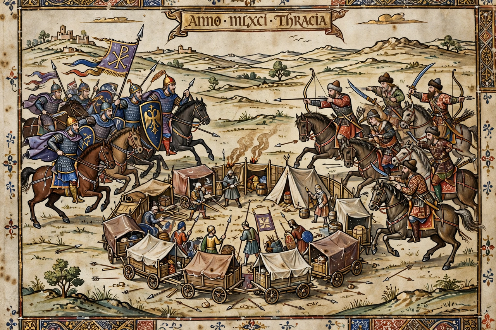

Battle of Levounion
From Wikipedia, the free encyclopedia
| Battle of Levounion | |
|---|---|
 | |
| Date | 29 April 1091 |
| Location | Levounion, near the Maritsa (Evros) River, Thrace |
| Result | Decisive Byzantine–Cuman victory |
| Belligerents | Byzantine Empire and Cuman allies vs. Pechenegs |
| Commanders | Alexios I Komnenos; Cuman khans Togortok and Boniak |
The Battle of Levounion was fought on 29 April 1091 between the forces of the Byzantine emperor Alexios I Komnenos, supported by some 40,000 Cuman allies, and an invading Pecheneg horde. The battle, fought near the hill of Levounion close to the Maritsa River in Thrace, ended in the near-annihilation of the Pechenegs and removed a threat that had menaced Constantinople itself.
Background
The Pechenegs, a Turkic nomadic people, had crossed the Danube and campaigned in the Balkans for years. In the winter of 1090–91 they advanced to the vicinity of Constantinople, raising fears of an alliance with the Seljuk emir Tzachas. Alexios, whose empire was gravely weakened after the catastrophe at Manzikert two decades earlier, secured the alliance of the Cumans, another steppe people and rivals of the Pechenegs.
The battle
On 28 April the imperial and Cuman armies approached the Pecheneg camp, a vast wagon laager containing not only warriors but their families. The Pechenegs, surprised, formed up hastily the next morning. The combined Byzantine and Cuman assault overwhelmed them; the fighting turned into a massacre in which much of the Pecheneg host, including non-combatants, was killed. According to the Alexiad, written by the emperor's daughter Anna Komnene, the Pecheneg nation was effectively destroyed in a single day.
Aftermath
The victory at Levounion secured Constantinople's European hinterland, restored Byzantine prestige, and gave Alexios breathing room that helped set the stage for the empire's Komnenian recovery. Surviving Pechenegs were settled as soldiers in Byzantine service. The battle is among the most decisive of the medieval Balkans; see also the Byzantine Empire under the Komnenoi.